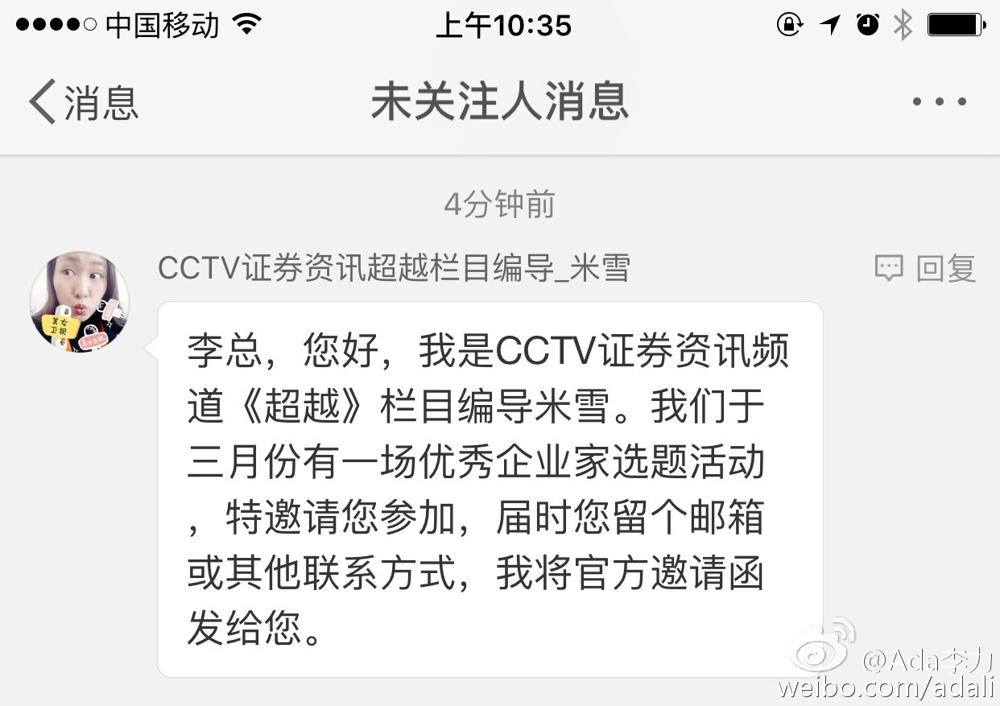

投资领域这种现象更常见，刚毕业的学生受VC追捧，我这样人过中年才出来创业的，会受到漠视或者歧视。@Ada李力:#招聘#市场上有个很奇怪的现象。同一个职位，毕业1-3年的，要的薪水跟有10年工作经验的人，差不多。不知道是90后太张扬，还是80后太低调。
回复@ShiningRay:你也遇到类似情况？//@ShiningRay:我也觉得很奇怪，估计是80后低调吧@Ada李力:#招聘#市场上有个很奇怪的现象。同一个职位，毕业1-3年的，要的薪水跟有10年工作经验的人，差不多。不知道是90后太张扬，还是80后太低调。
吵到这里来了//@屌丝准码农一枚:既然说了是同一职位，那为啥10年代就应该比一两年的高很多呢。 //@真阿当:这是我很担心的。过去几天说过这种担心的原因和可能造成的后果。为这事也被群小朋友教做人 //@ShiningRay:我也觉得很奇怪，估计是80后低调吧@Ada李力:#招聘#市场上有个很奇怪的现象。同一个职位，毕业1-3年的，要的薪水跟有10年工作经验的人，差不多。不知道是90后太张扬，还是80后太低调。
CCTV证券资讯频道《超越》栏目，最近微博上行骗更加疯狂，频发私信骚扰。广而告之。@Ada李力:央视什么时候学会在微博上行骗了。周末被所谓的访谈嘉宾忽悠过去，结果是听了培训师滔滔不绝讲了2小时，然后就轰大家去做初审缴费。今天私信又来了，换了个名头骗，优秀企业家？！！！ 
看来闺女也遭遇到过期疫苗了。她感染疱疹（水痘）的时候我还奇怪，打过疫苗的。更奇怪的是她还传染了好几个常在一起玩的小朋友，也是打过疱疹疫苗的。@世界卫生组织:【世卫组织关注疫苗事件】疫苗应该正确储存和管理，否则将失去效力或降低效力。但必须注意的是，不正确储存或过期的疫苗几乎不会引起毒性反应，因此在本事件中，疫苗安全风险非常低。儿童面临的风险在于缺乏对疾病的预防能力，这也是接种疫苗的目的。